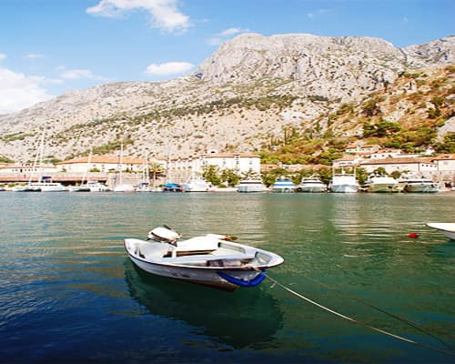
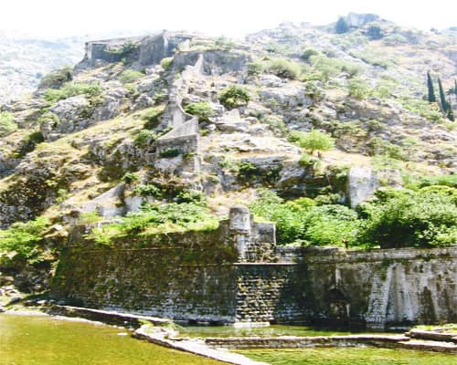
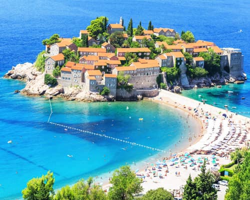
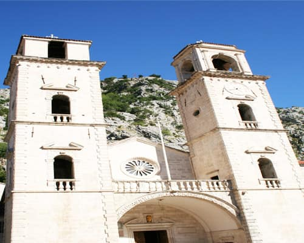
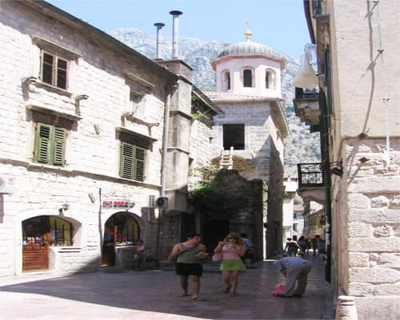
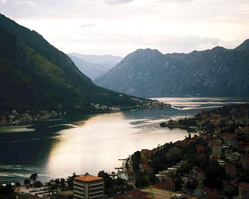
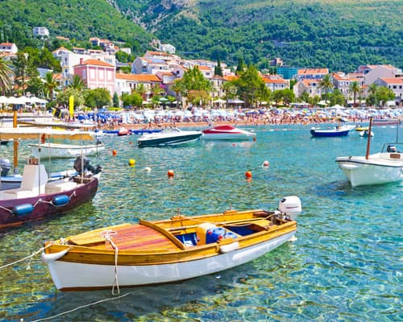
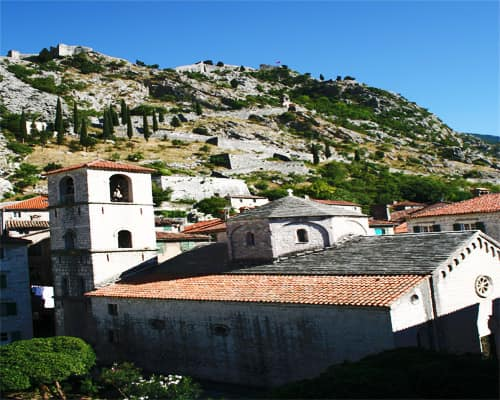
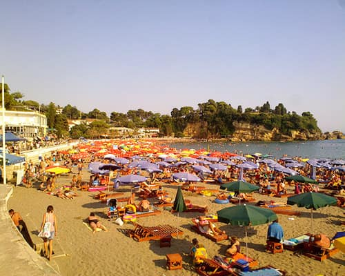

Kotorbukta ser ut som en fjord, Budva har gamleby og sand, og en time innover ligger fjell på 2 500 meter. Alt dette får du uten å bytte hotell – eller med, hvis du vil. Du velger.

KotorHvert sted har sin egen side med hoteller, fly og transfer. Velg hotellet først – fly og transfer legger du til etterpå.

Mest populærtBudva
UNESCOKotor
Nærmest flyplassenTivat
Ved innløpetHerceg Novi
RoligPetrovac
LitenPerast
Lengst sørUlcinjAlle bookes på samme sted. Fly, hotell, transfer og opplevelser – én bestilling.
Budva eller Petrovac, hotell ved stranda, transfer fra Tivat. Enkelt og varmt.
Søk Budva →Bo i Kotor eller Perast, båt over til Perast og kirkeøya, kveld i gamlebyen. For den som liker vegger med historie.
Søk Kotor →Fire netter ved sjøen, tre i Žabljak. Leiebil mellom, eller transfer. Du setter sammen begge delene i én reise.
Pakk reisen selv →Fly til Dubrovnik, to netter der, så over grensa til Herceg Novi og Kotor. Hjem fra Tivat. Én reise, to land.
Pakk reisen selv →Søk på stedet du vil bo, se hotellene med oppdaterte priser, og legg til fly og transfer når du er klar. Lagre reisen, kom tilbake, bytt hotell. Book den når den stemmer.
Ca. 3 timer fra Oslo til Tivat med direktefly. Med mellomlanding (København, Riga, Beograd) blir det 5–7 timer.
Tivat (TIV) for kysten – Kotor, Tivat, Budva og Herceg Novi ligger 10–40 minutter unna. Podgorica (TGD) har flere avganger hele året og passer for Ulcinj, Skadarsjøen og fjellene. Dubrovnik (DBV) er et tredje alternativ for Herceg Novi og Kotor.
Juni og september: varmt i sjøen, færre folk enn i juli–august. Mai og oktober passer for bukta og fjellene. Juli og august er høysesong med full Budva.
Budva for strand, liv og sand. Kotor for gamleby, bukta og rolige kvelder. De ligger 25 minutter fra hverandre, så du kan bo ett sted og ta dagsturer til det andre.
Ja. Søk på stedet, velg hotell, og legg til fly og transfer når du er klar. Reisen kan lagres og endres til du booker den.
Ikke langs kysten – transfer og lokalbuss holder. Skal du til Durmitor eller rundt Skadarsjøen, er bil enklest. Leiebil kan legges til i reisen.
Euro. Montenegro er ikke EU-medlem, men bruker euro. Kort går nesten overalt, men ha litt kontanter til småsteder.
Rimeligere enn Kroatia og Italia på restaurant og hotell, særlig utenom juli–august. Porto Montenegro i Tivat er unntaket.